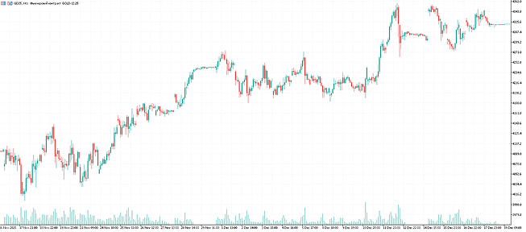
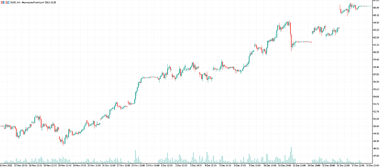
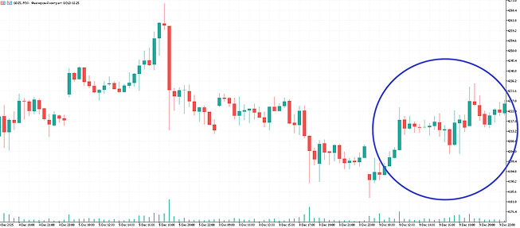

АРБИТР
Хватит пытаться прогнозировать будущее!
В арбитражной логике другой подход: используем подсказки рынка и получаем прибыль в моменте, на текущем дисбалансе, без прогнозов и гаданий.
График золота
График серебра
Цена на серебро пошла вверх ↑

А цена золота осталась на месте —
Главная фишка в том, что рыночные неэффективности можно искать на полном автомате.
Арбитр
Арбитражный взгляд: получайте прибыль независимо от состояния рынка
Но у классики есть ограничение, которое частный трейдер чувствует сразу: прибыль часто небольшая и съедается издержками, а денег нужно задействовать сразу в две позиции.
- Когда появляется дисбаланс, «Арбитр» открывает сделки на обоих активах, как в классическом парном трейдинге.
- Но каждую сделку робот сопровождает в отдельности по правилам одноногого арбитража.
Как это
работает?
-
Специальный скрипт автоматически находит пары инструментов,подходящие под арбитраж.
-
Конструктор автоматически строит арбитражный индекстот самый «график разницы», где видны перекосы
-
Настраиваете параметры торговой стратегииили позволяете конструктору автоматически подобрать лучшие варианты.
-
Настраиваете риск и сопровождение(как робот входит, где защищается, где фиксирует) или позволяете конструктору автоматически подобрать оптимальные параметры.
-
Тестируете стратегию на истории,чтобы проверить ее работоспособность.
-
Запускаете в торги и получаете прибыль«Арбитр» будет автоматически управлять роботом и следить, чтобы он оставался прибыльным.
Сделки на донышках и вершинах
Арбитражная логика живёт по другим законам. Вы смотрите не на сам актив, а на арбитражный индекс – как один актив ведет себя относительно другого.
Рынок стоит на месте, а арбитражный индекс двигается. Активы разъезжаются и сходятся обратно, дисбаланс дает прибыл
Уникальное свойство арбитражного индекса – показывать крайние состояния дисбаланса. Именно в эти моменты чаще всего и происходит разворот цены. Робот, торгующий на арбитражном индексе, реально ловит донышки и вершины.
И да, для 99% торговых роботов это недоступно, потому что они видят только цену, а не перекос между активами.
как «Арбитр» делает сделки на пиках цены в связке золото/серебро.
Сколько можно зарабатывать?
в зависимости от уровня риска и параметров стратегии.
Если роботы в Вашем портфеле не дублируют друг друга (слабо коррелируют), суммарный результат растет кратно.
Идеально для занятых людей: меньше рутины, больше контроля, больше автоматизации.
«Арбитр» —
Ваш источник дополнительного дохода на автопилоте
у графика.
настроение рынка.
в реальных рыночных условиях:
Железобетонная защита от слива депозита и глубоких просадок
Знакомо?
С «Арбитром» такой сценарий исключен!
В этом разрезе более важен другой параметр – надежность
Тестирование по-взрослому: защита от самообмана
Поэтому в нормальном алготрейдинге важна не «красота графика», а отбор по-настоящему устойчивых стратегий, которые смогут зарабатывать на будущем реальном рынке.
первичный фильтр
фильтр от иллюзий
чтобы не было сюрпризов
- комиссии,
- проскальзывания,
- задержки исполнения и прочие рыночные нюансы.
реально устойчивые стратегии.
деньги на реальном рынке, а не только в тестере
Портфель торговых роботов: стабильнее, надежнее, прибыльнее
это стресс. Портфель —
это спокойствие и система.
Портфель решает эту проблему.
стабильность и снижение рисков
- выше стабильность доходов;
- меньше зависимость от одного сценария (бычий/медвежий/боковик);
- лучше контроль риска, потому что просадки разных стратегий не совпадают;
- высокая надежность дохода, когда прибыль приходит из нескольких источников
единственный способ зарабатывать больше
Один робот – это один поток прибыли.
Портфель – это несколько потоков, которые могут работать параллельно на одном счете и суммироваться.
Вы не увеличиваете риски вслепую. Вы распределяете капитал между стратегиями и получаете:
- больше возможностей входа;
- больше сделок в разных связках;
- больше шансов, что часть портфеля зарабатывает, когда другая часть ждет.
фабрика портфеля и исследовательский инструмент
- повторить решения из обучающих материалов, чтобы быстро стартовать,
- а затем начать исследовать свои идеи и находить лучшие связки.
- фьючерсы Мосбиржи (отдельное мощное направление, там много связок и возможностей),
- акции и индексы,
- криптовалюты,
- металлы,
- форекс-пары и другие рынки.
- ближний vs дальний фьючерс,
- фьючерс vs акция,
- календарные спрэды,
- вечный vs срочный контракт,
- активы с высокой корреляцией и т.д.
Управление роботами: главный секрет надежного автозаработка
Пока Вы занимаетесь своими делами, «Арбитр» днем и ночью пристально следит за эффективностью каждого робота и помогает вовремя поймать момент, когда стратегия начала ухудшаться и пора действовать.
- просадка (чтобы не допустить глубокого минуса),
- profit factor, как главный показатель эффективности, который сигнализирует, что стратегия начала ломаться.
- Стратегия ломается? Вы узнаете ДО того, как станет больно.
- Сняли стратегию вовремя, до того, как она сольет заработанную прибыль.
- Создали новую на замену, быстро, в конструкторе.
- Портфель снова работает.
чем управляете
без «жизни у монитора»
- рутина анализа, входа и сопровождения полностью на роботах;
- Вы подключаетесь только по сигналу: пришло уведомление → посмотрели → приняли решение.
Владимир
Чамин
- Разработчик технологий для упрощения автоматического трейдинга: Арбитр, Титан, Нейробот, Автотренд, TradingVision.PRO, Cyclon.
- Согласно опросу, 80% учеников заявили, что бросили бы трейдинг, если бы не получили доступ к одной из этих технологий.
- В кризисном 2014 году установил личный рекорд доходности в автоматическом трейдинге: +253% прибыли к депозиту.
- Мои ученики профессионально управляют капиталом инвесторов.
- 11 лет руководил офисом Альпари в Екатеринбурге, знаю индустрию трейдинга изнутри.
- Учился у лучших мировых алгоритмических трейдеров: Томас Неснедал (Чехия), Кевин Дейви (США), Эрнест Чан (США), Андреас Е. Кленоу (Швейцария), Том Бассо (США).


Комплект, который доведет до результата
это не «купил и разбирайся сам».
до запуска.
- Установка MetaTrader 5.
- Открытие торгового счета.
- Установка робота и индикатора.
- Разбор функционала арбитражного робота: что за что отвечает.
- Построение арбитражного индекса.
- Создание стратегии в конструкторе.
- Настройка стратегии под нужную доходность и риск.
- Управление стратегией: как понимать, что она «живая».
- Создание виртуального сервера (VPS).
- Установка MT5, индикатора и робота на сервер.
- Загрузка стратегии.
- Запуск в реальную торговлю
- Быстрое создание арбитражных стратегий.
- Управление арбитражными стратегиями.
- Хакатон №1: создаем стратегии в прямом эфире.
- Хакатон №2: создаем стратегии в прямом эфире.
- Хакатон №3: создаем стратегии в прямом эфире.
- Создание и управление портфелем стратегий.
- Бонусное занятие: стратегии парного трейдинга.
- для российских фьючерсов;
- для криптовалют;
- для индексов;
- для Форекс;
- для российских Форекс-брокеров.
Кому подходит «Арбитр»?
Он для тех, кто хочет понятный, управляемый автоматический доход.
Вы больше не хотите верить. Вы хотите понимать.
В «Арбитре» Вы управляете логикой и портфелем, а не надеетесь на чужую настройку.
- Все по шагам,
- без программирования и сложностей,
- с понятным обучением до запуска в реальную торговлю
- и долгосрочной поддержкой.
- создавать свои индексы и гипотезы;
- тестировать связки;
- собирать портфели стратегий под разные рынки;
- находить лучшие варианты и масштабировать;
- управлять капиталом инвесторов или создавать стратегии для автоследования.
- Портфель роботов автоматически работает на счете.
- «Арбитр» автоматически следит за каждым роботом 24/7.
- Telegram-уведомления включают Вас только по делу.
- железная защита депозита на трех уровнях;
- профессиональное тестирование перед запуском в торги;
- контроль деградации стратегий;
- портфель вместо ставки «все на одного робота».
«Арбитр» — это не робот
Это Ваша фабрика автоматического
дохода
А можете включить другой режим и доминировать на любом рынке.
Режим, где рынок сам показывает Вам деньги через дисбалансы и неэффективности.
-
Вы зарабатываете здесь и сейчасна рыночных неэффективностях вместо попыток предсказать будущее.
-
Вы видите то, чего не видит большинство трейдеровАрбитражный индекс дает сигналы там, где на обычном графике тишина.
-
Вы получаете прибыль в любых фазах рынка:рост, падение, боковик. Пока другие ждут тренд, Вы забираете волатильность.
-
У Вас появляются свои уникальные роботы,которых больше нет ни у кого. Не «купленный черный ящик», а Ваша настройка под Ваши цели.
-
Вы получаете полный контроль.Не зависите от чужих настроек: пересобрали, заменили, усилили, собрали портфель.
-
Скорость меняет правила игры.Конструктор позволяет создавать стратегии и исследовать рынки в пару кликов мышки: гипотезы проверяются быстро, мусор отбрасывается сразу, рабочие связки находятся быстрее.
-
Портфель вместо ставки «все на одного».Армия роботов на Вашем счете дает стабильность, снижает риски и может кратно увеличивать итоговую доходность.
-
Входы точнее и легче психологически.Арбитражная логика часто дает сделки на вершинах и донышках. Такие сделки проще держать, проще доверять системе.
-
Автодоход без жизни у монитора.Вы живете своей жизнью, а «Арбитр» работает и следит за роботами 24/7, подключая Вас только «по сигналу».
-
Масштабируемость:можно начинать с небольшого депозита (от 10 000 ₽) и постепенно расширять портфель до крупных сумм.
Надежный не потому, что всегда угадывает рынок, а потому, что это система:
прямо сейчас
неэффективностях «на лету».
свои уникальные арбитражные стратегии уже сегодня.
Часто задаваемые вопросы
Нет, не нужно. Вы не пишете код, Вы настраиваете роботов в конструкторе в несколько кликов мышки.
Да, если у вас есть базовая компьютерная грамотность: умение пользоваться браузером, электронной почтой, просматривать видео, скачивать и устанавливать программы, регистрироваться на сайтах. В комплекте есть пошаговое обучение от установки MT5 до запуска робота в реальную торговлю, а также долгосрочная поддержка на весь период пользования конструктором.
Нет. Это не HFT.
Конструктор позволяет создавать стратегии, основанные на одноногом арбитраже, классическом парном трейдинге, и их комбинации: сделки открываются, как в парном трейдинге, а сопровождается каждая сделка по правилам одноногого арбитража.
В таких видах арбитража Вы анализируете индекс, но сделку открываете, как обычный трейдер, в рамках одного брокера/биржи. Скорость не решает, решает логика дисбаланса.
Да, конструктор позволяет создавать как стратегии, основанные на одноногом арбитраже, так и стратегии, основанные на классическом парном трейдинге.
Есть даже возможность объединять одноногий арбитраж и парный трейдинг в одной торговой стратегии.
В мастер-группе есть бонусное занятие по парному трейдингу (классическому арбитражу).
На любом рынке: фьючерсы Мосбиржи, индексы, криптовалюты, металлы, форекс и др. Фактически, можно исследовать любые инструменты, которые доступны у Вас в MT5.
Можно работать на любых таймфреймах, от М1 до D1.
Вы можете открыть счет у любого брокера, который дает доступ к Metatrader 5.
Для торговли фьючерсами и акциями Московской Биржи подходит российский брокер Финам.
Если Вы новичок и у Вас никогда не было брокерского счета, Финам сможет предоставить Вам Metatrader 5 только через год после открытия счета и совершения ряда сделок. В этом случае Вы можете начать торговлю через российского форекс-брокера Альфа-Форекс.
Для торговли валютами, иностранными индексами, криптовалютами и другими активами через CFD могут подойти брокеры: Amarkets, Alpari, Roboforex, Bybit и др.
Сумма минимального депозита зависит от Вашего брокера и активов, которыми Вы будете торговать. Минимально возможный старт: от 10 000 ₽.
В трейдинге нет и не может быть гарантий прибыли. Но в «Арбитре» Вы настраиваете доходность под свои цели через параметры стратегии и размер риска.
С помощью профессионального тестирования Вы заранее можете понимать, в какую просадку может уйти торговый робот при реальной торговле, какой максимальный риск от депозита Вы принимаете и на какую примерно доходность можно рассчитывать.
Торговля робота полностью останавливается. Вам в Телеграм уходит уведомление с указанием причины остановки торгов.
Вы анализируете отчет и принимаете решение: пересоздать робота с новыми параметрами, отключить робота или перезапустить вручную после корректировки настроек.
Да, функционал «Арбитра» полностью доступен для использования на демо-счетах брокеров в MetaTrader 5.
С российскими фьючерсами, к сожалению, потренироваться на демо не получится. Для тестов можно вести торговлю 1 лотом на небольшом депозите.
Если Вам интересна торговля через форекс-брокеров, у них можно открыть демо-счет, потренироваться, а на реальный счет перейти тогда, когда почувствуете уверенность в результатах.
Да, виртуальный сервер нужен для бесперебойной автоматической торговли.
Вы можете запустить «Арбитра» на своем домашнем копьютере, но для этого он должен быть постоянно включен и иметь постоянный доступ к сети Интернет.
Достаточно компьютера (или VPS сервера), не старше 10 лет, с 64-разрядной операционной системой Windows 8/8.1/10/11 или Windows Server 2012 R2. Процессор с 4-мя ядрами и более. Оперативная память от 1 Гб и твердотельный дисковый накопитель SSD любого объема.
Вы получаете бесплатные обновления программного комплекса «Арбитр» в течение всего срока действия лицензии. Обновления включают исправления, улучшения и новые функции.
Техническая поддержка по установке и решению базовых вопросов оказывается специалистами Инфоклуба.
Консультации по практическим вопросам трейдинга и настройке «Арбитра» доступны от Владимира Чамина и команды проекта в рамках сообщества пользователей.
чтобы получить подробную голосовую консультацию.
Получите рыночное преимущество или снова отложите на потом?
Они даже не доходят до решения. Они просто… снова живут как раньше. Мечтают создать доход на автомате, но проходят мимо, когда появляется реальный шанс.
перестанет зарабатывать?»
Стратегия устала? Вы узнаете об этом вовремя. Сняли. Пересобрали. Поставили новую. Система продолжает зарабатывать.
Вы живете. А доход приходит в фоновом режиме.
важное!
Вы приобретаете спокойствие.
Приобретаете контроль.
Приобретаете право больше не гадать
и не зависеть от чужих «черных ящиков».
Вы снова отложите или сделаете шаг к автоматическому доходу?
Если Вы дочитали до этого места, значит Вам это нужно.
Осталось одно действие.
Жмите кнопку и забирайте «Арбитр» прямо сейчас.